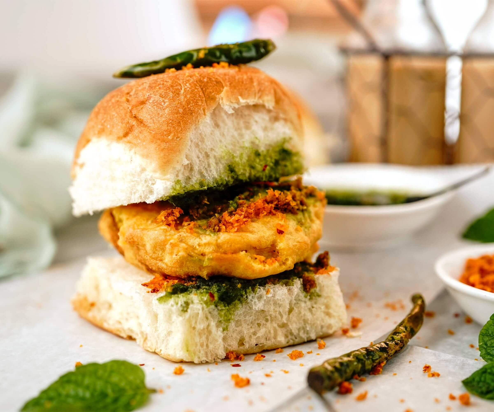

Vada Pav
Spicy potato patty in a bun with chutney
📍 J.M. Road

Dabeli
Sweet & spicy mashed potato bun
📍 Kothrud

Momos
Steamed dumplings with spicy chutney
📍 FC Road

Pav Bhaji
Spiced mashed veggies with buttered pav
📍 JM Road

Bombay Sandwich
Grilled sandwich with veggies and chutneys
📍 FC Road

Bhel Puri
Crispy puffed rice with tangy chutneys
📍 Sarasbaug

Pani Puri
Crisp puris filled with spicy water and potatoes
📍 Shivajinagar

Ragda Pattice
Potato patties with white peas curry
📍 Tilak Road
🍔 Vada Pav is often called the "Indian Burger".
🌶️ Misal Pav from Pune is spicier than any other region!
🥟 FC Road sees over 1,000 plates of momos sold each day.
🍡 Many Pune stalls still use secret family recipes passed down generations.
🥤 Sugarcane juice is one of the most consumed drinks in Pune's street markets.
🧆 Some stalls in Kothrud open as early as 6 AM for breakfast crowds!
"I travel across the city just for the misal at Nashik Phata!" – Rohit M.
"The street sandwiches at JM Road are better than cafes!" – Sneha P.
"Best Vada Pav in Pune is at J.M. Road!" – Amit K.